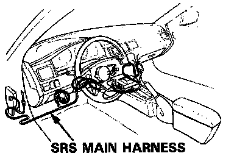
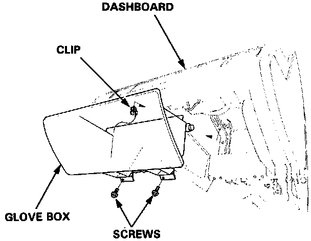
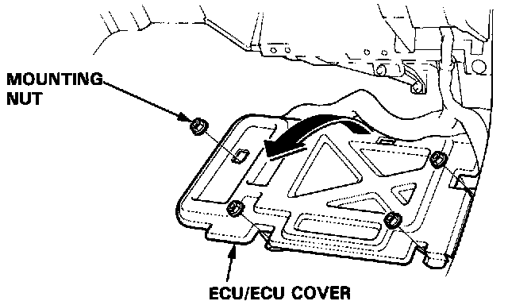
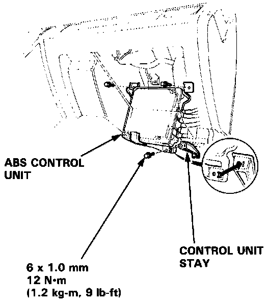
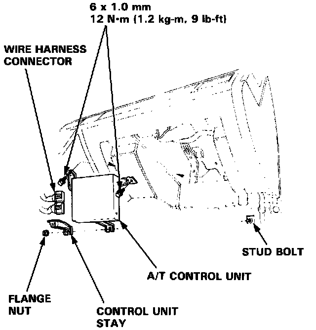

Control Module: Service and Repair
A/T Control Unit Replacement
CAUTION:
- All SRS electrical wiring harnesses are covered with yellow outer insulation.
- When disconnecting the SRS wire harness, install the short connector on the airbag, then disconnect the wire harness.
- Replace the entire effected SRS harness assembly if there is an open circuit or damage to the wiring.

1. Remove the glove box from the dashboard.
2. Remove the right door sill molding and the small cover on the right kick panel, then pull the carpet back to expose the ECU.

3. Remove the ECU cover mounting nuts and turn the ECU over.

4. Remove the ABS control unit.

5. Remove the A/T control unit and disconnect the wire harness connectors.